Tissue paper is one of the most magical craft supplies you can keep at home. It is lightweight, inexpensive, and comes in every color imaginable. Tissue paper crafts are beginner-friendly, low-mess, and wonderfully satisfying for little hands. Whether your child is two or ten, there is something on this list for them. We have gathered 20 of our favorite ideas so you can find the perfect one for your next creative afternoon together. 🎨
What You'll Need
Most of these projects share the same basic supplies, so one quick shopping run covers nearly everything on the list.
- Multicolor tissue paper pack, the more colors the better for a vibrant mix of projects.
- Mod Podge, great for suncatchers, collages, and any project that needs a glossy sealant finish.
- Child-safe scissors, one pair per child for cutting and fringing tissue paper safely.
- Colorful pipe cleaners, perfect for flower stems, caterpillars, and decorative details.
- Self-adhesive googly eyes, a fun finishing touch for creatures and characters.
- White school glue or a glue stick, for assembling layers and attaching pieces.
- Clear contact paper or wax paper, for suncatcher and stained glass style projects.
20 Tissue Paper Craft Ideas
1. Tissue Paper Flowers
Stack four to six squares of tissue paper, fold them accordion-style, pinch the center, and fan both sides open to form a fluffy pom-pom flower. Twist a pipe cleaner around the middle as a stem. These tissue paper flowers are endlessly pretty and take less than ten minutes to make, which means you can fill a whole vase before snack time.
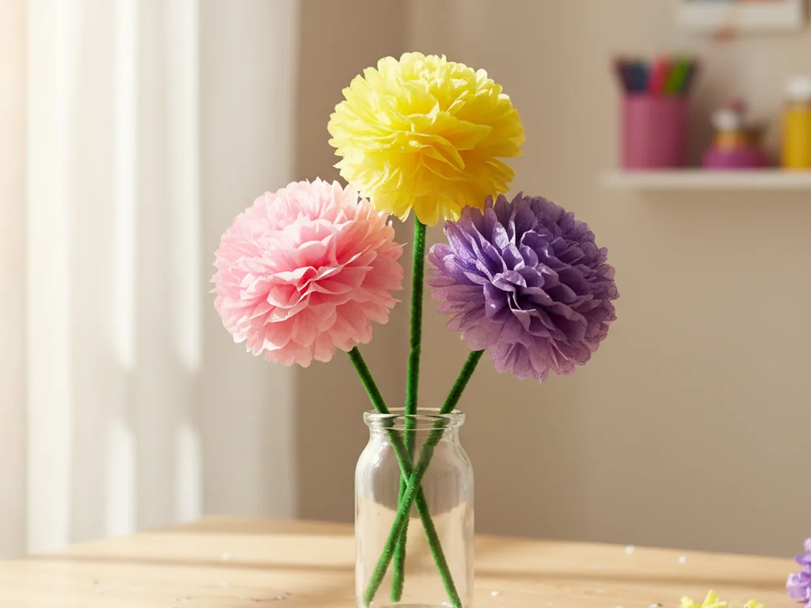
2. Tissue Paper Butterfly
Gather a sheet of multicolor tissue paper at the center and pinch it with a pipe cleaner twisted into two antennae. Fan the wings out and gently shape them. These pretty butterflies look gorgeous strung across a window or pinned to a bulletin board. Even toddlers can do this one with just a tiny bit of help at the center pinch.
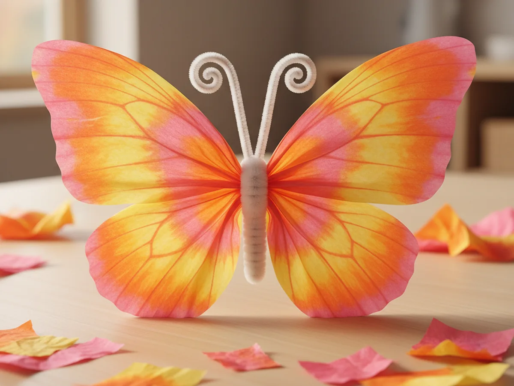
3. Tissue Paper Suncatcher
Tear small pieces of colorful tissue paper and press them onto a sheet of clear contact paper. Lay a second sheet of contact paper on top to seal everything in, then trim to any shape you like. Hang it in a sunny window and watch the colors glow. This is one of those tissue paper crafts that truly looks like stained glass and earns big compliments from anyone who sees it.
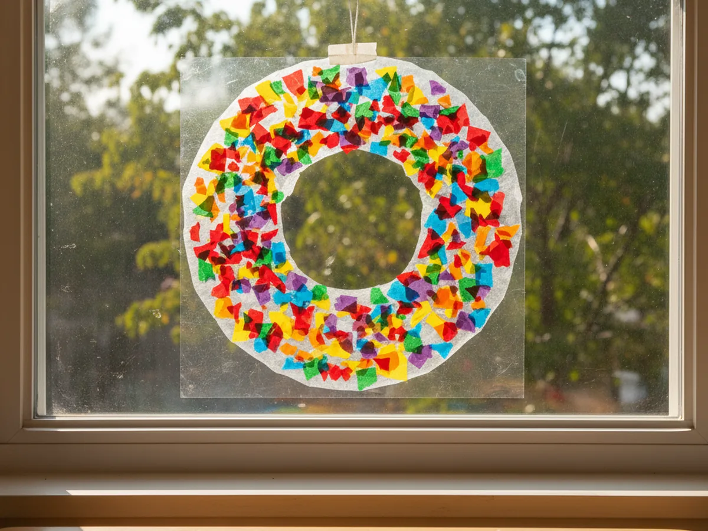
4. Tissue Paper Pom-Pom Garland
Make a row of tissue paper pom-poms in graduating colors and thread them onto a piece of string. Hang the garland across a doorway, above a bed, or along a wall shelf. Kids love choosing the color order and can make dozens of pom-poms in one sitting. It is one of those tissue paper craft ideas that keeps little hands busy while producing something genuinely beautiful.
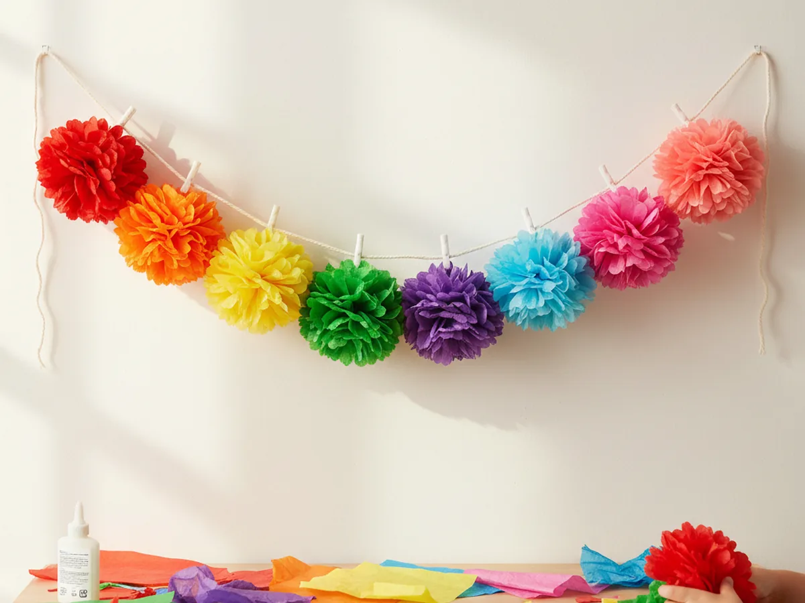
5. Tissue Paper Lantern
Roll a sheet of cardstock into a cylinder and glue the seam. Tear strips of colorful tissue paper and glue them around the outside in overlapping layers. Add a strip of cardstock as a handle and you have an adorable decorative lantern. These look lovely lined up on a table for a birthday party or holiday dinner.
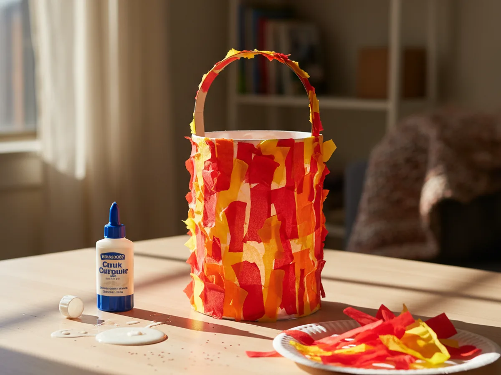
6. Tissue Paper Rainbow
Cut long strips of tissue paper in red, orange, yellow, green, blue, and purple. Glue them in arc shapes onto a large piece of white paper to create a bright rainbow. Add fluffy cotton ball clouds at each end. This classic tissue paper art project is perfect for rainy afternoons and looks wonderful displayed on a bedroom wall.
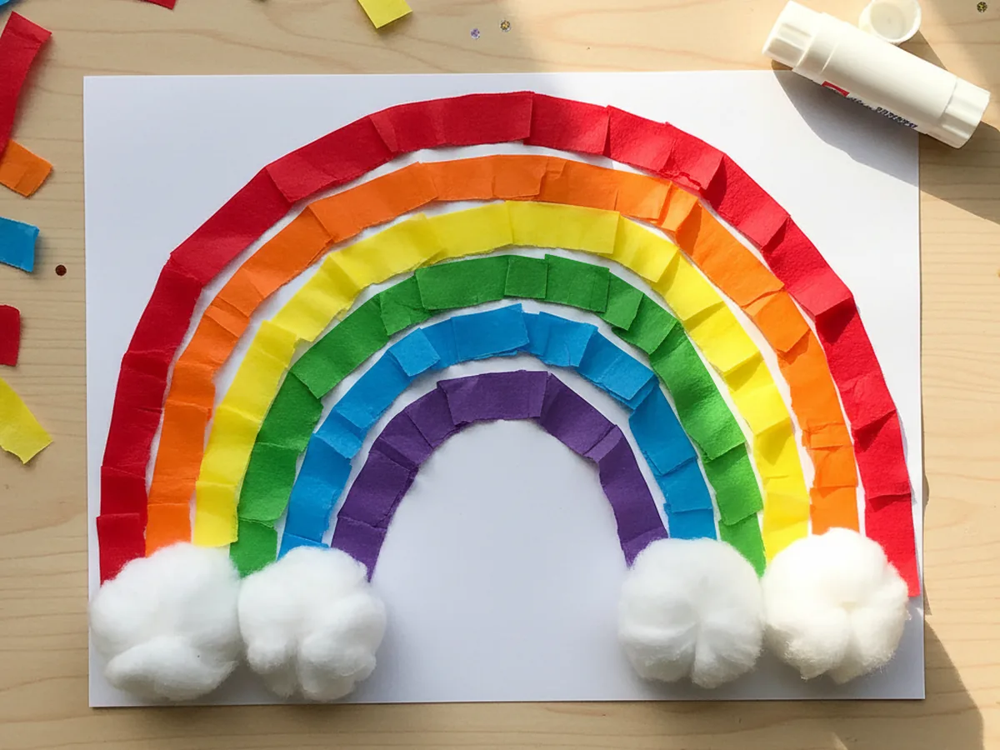
7. Tissue Paper Collage
Tear tissue paper into small irregular pieces and let your child glue them all over a canvas board or heavy card stock to create a free-form collage. The overlapping colors blend beautifully when wet glue dries. There are no rules with this one, which makes it a wonderful project for younger toddlers who just want to explore and create.
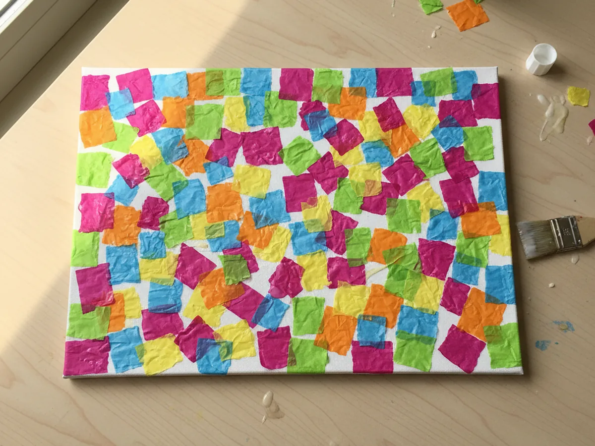
8. Tissue Paper Caterpillar
Scrunch small squares of green tissue paper into balls and glue them in a row on a strip of cardstock to form the caterpillar's body. Add googly eyes to the first ball and curl two short pipe cleaner antennae at the top. Kids absolutely love making these little critters, and a whole family of caterpillars can crawl across your fridge or windowsill. 🐛
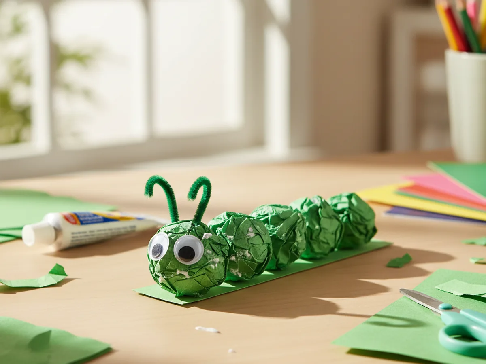
9. Tissue Paper Stained Glass Window
Cut a frame from black cardstock, then stick small torn tissue paper squares onto the inside with a thin layer of Mod Podge. Let it dry completely until the tissue paper is translucent and the whole thing glows when held up to the light. This is one of the most visually impressive tissue paper crafts for kids on the list, and it genuinely looks like real stained glass.
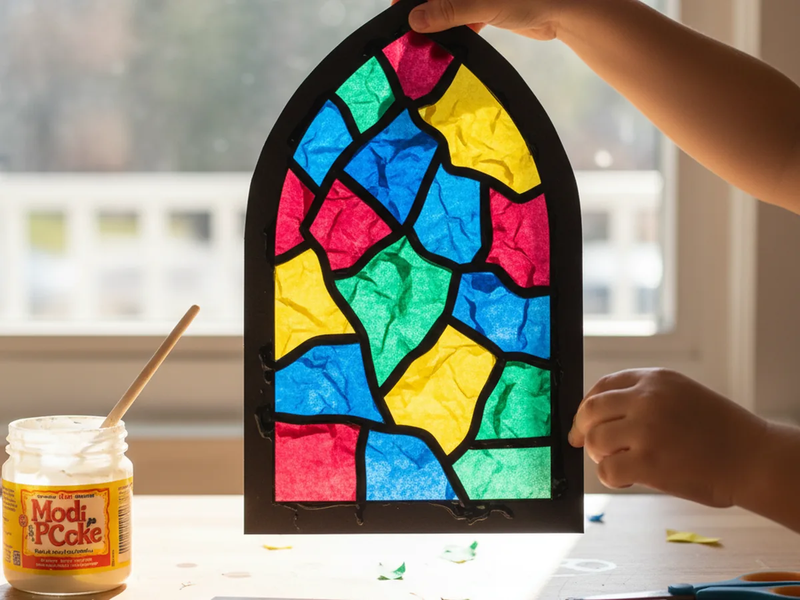
10. Tissue Paper Hot Air Balloon
Draw and cut out a large teardrop balloon shape from cardstock. Let your child cover it entirely in horizontal stripes of different colored tissue paper. Attach a small paper basket shape at the bottom with a piece of string. Hang several of these from the ceiling at different heights for a magical room display that sparks the imagination.
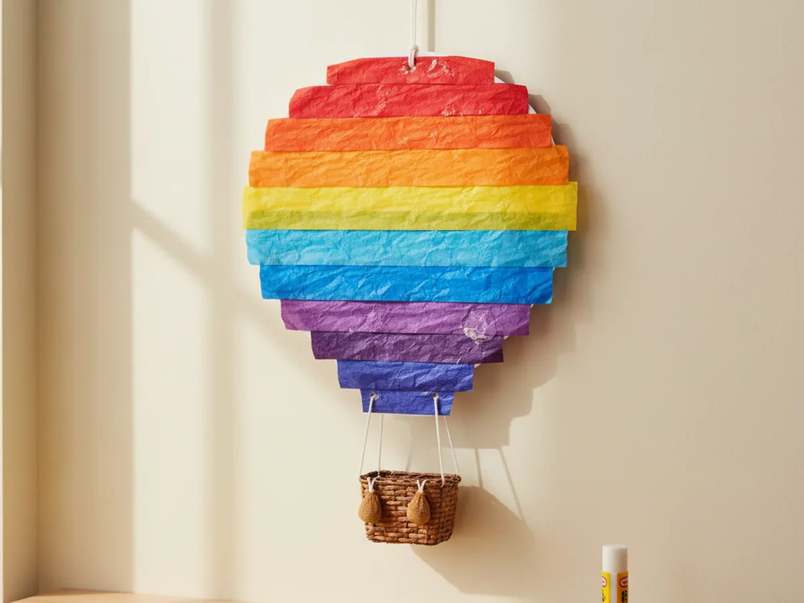
11. Tissue Paper Wreath
Cut the center from a paper plate to form a ring. Scrunch small squares of tissue paper into balls and glue them all over the ring until it is completely covered. Choose all one color for a classic look or mix colors for a vibrant burst of cheerfulness. A simple ribbon loop at the top finishes it off perfectly for hanging on a door or wall.
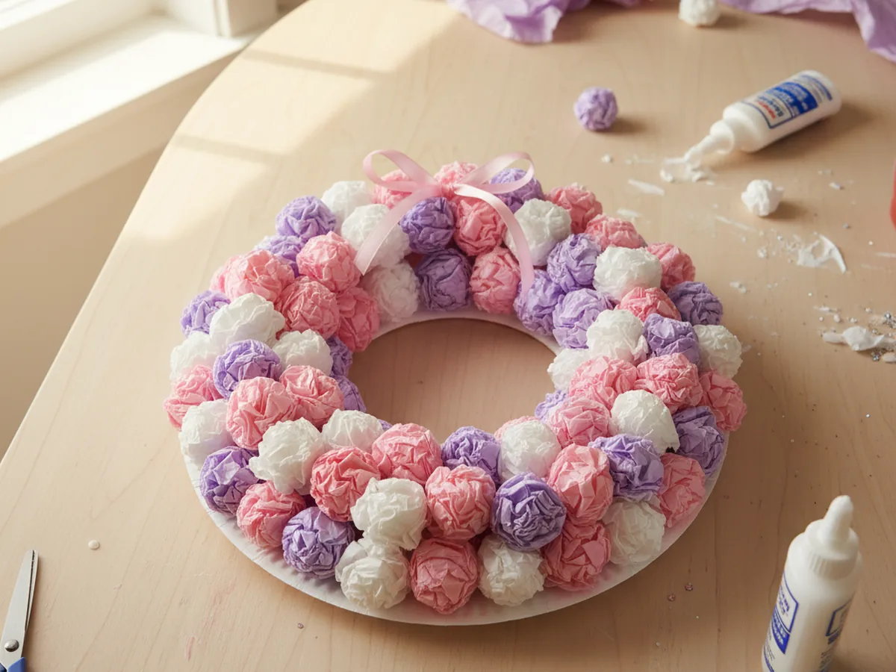
12. Tissue Paper Mosaic Card
Draw a simple outline on cardstock, such as a heart, sun, or flower. Tear tiny tissue paper squares and glue them inside the outline to fill it in, creating a mosaic effect. This makes a gorgeous handmade card for birthdays, Valentine's Day, or Mother's Day. The finished result looks like real mosaic tile work and is something any recipient would want to keep.
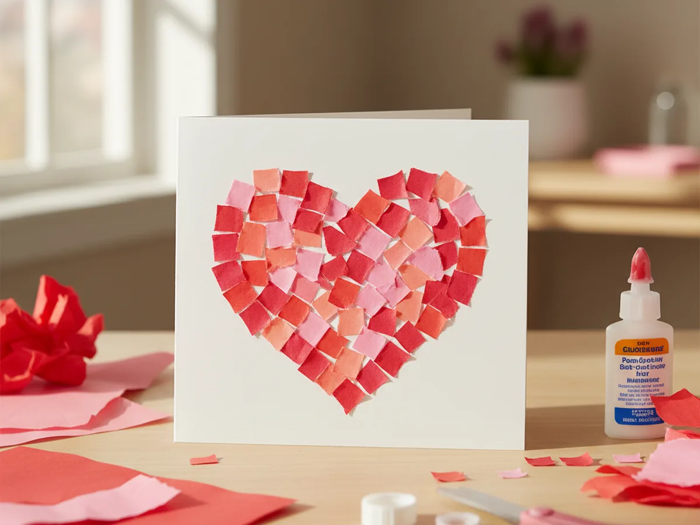
13. Tissue Paper Fish
Cut a simple fish shape from white cardstock and let your child cover it in overlapping tissue paper scale shapes in blue, green, and orange. Add a googly eye and draw on a small smiling mouth. These bright, cheerful fish are wonderful for an under-the-sea bedroom display or a springtime bulletin board at home.
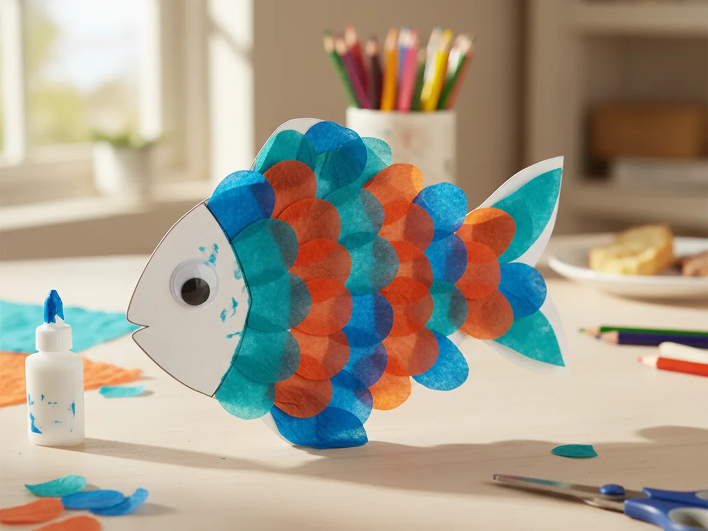
14. Tissue Paper Kite
Cut a diamond kite shape from cardstock and decorate it with colorful tissue paper patches. Attach a ribbon tail at the bottom corner with curled tissue paper bows tied along its length. Even though this kite won't fly, it is a wonderful room decoration and a great way to talk about wind and weather with curious little ones.
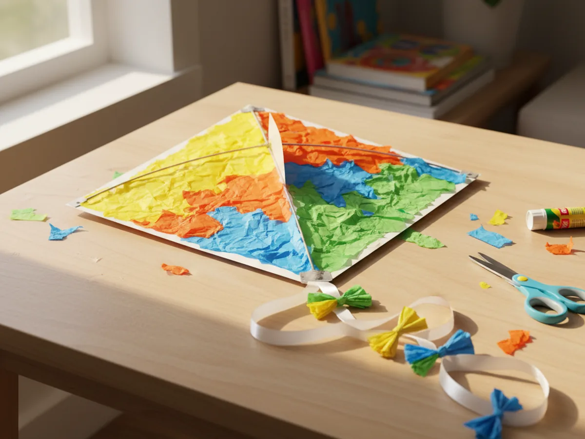
15. Tissue Paper Octopus
Scrunch a large ball of tissue paper for the octopus body and wrap it in a single sheet of blue tissue paper, securing the top. Cut the hanging skirt into eight equal strips for the tentacles and curl each one by wrapping it around a pencil. Add googly eyes to the head. Tissue paper animals like this one are always a huge hit with kids who love sea creatures.
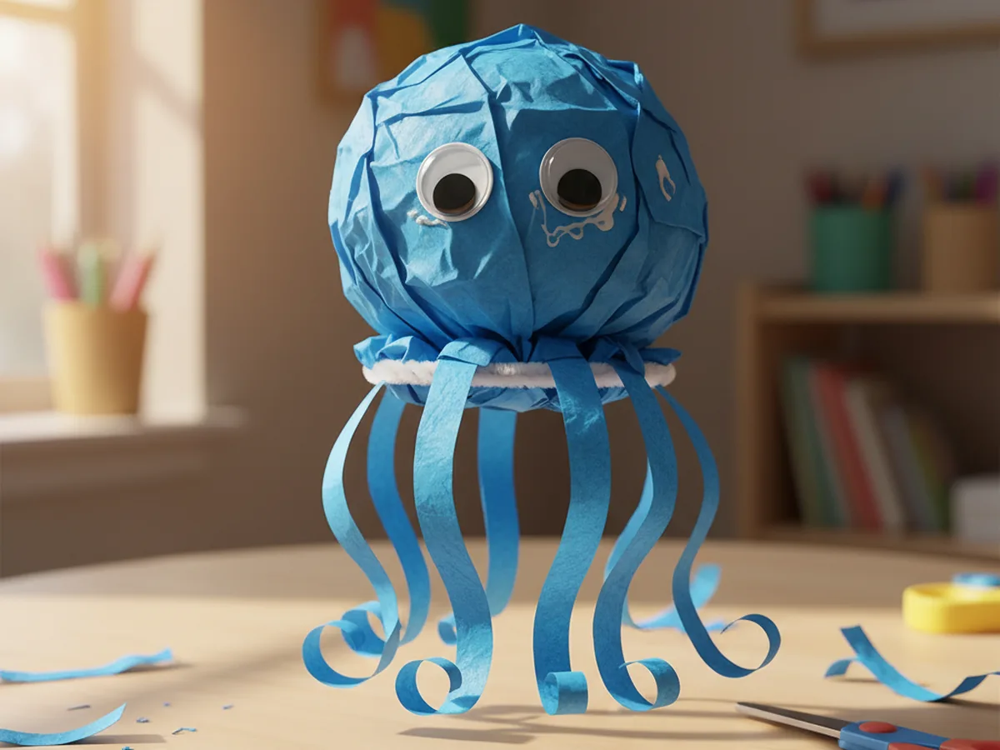
16. Tissue Paper Heart Card
Fold a sheet of cardstock in half to make a card. Cut heart shapes from tissue paper in various shades of red and pink and layer them on the front, slightly overlapping. The translucent layers create a beautiful depth effect. Write a sweet message inside and you have a handmade Valentine or love note that feels truly special and personal.
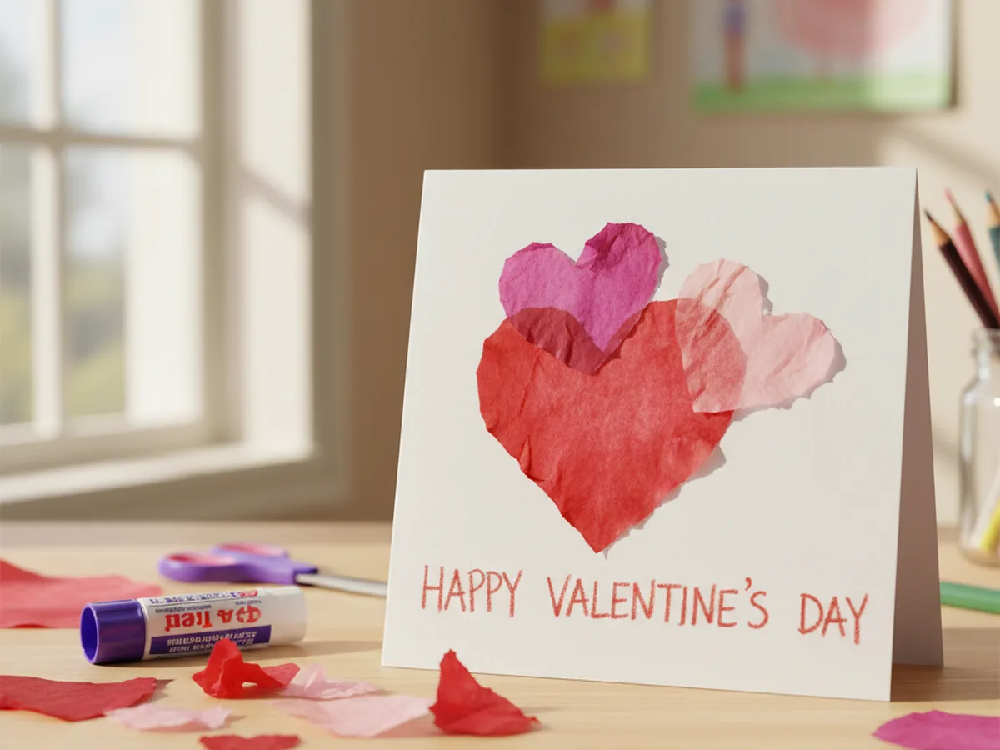
17. Tissue Paper Pinwheel
Layer two sheets of tissue paper in contrasting colors, fold accordion-style, pinch in the center, and fan both halves into a circle shape. Secure the center with a small brad fastener and attach to a wooden skewer. These make adorable party decorations or garden stakes, and kids feel so proud when they see their pinwheel spin gently in the breeze.
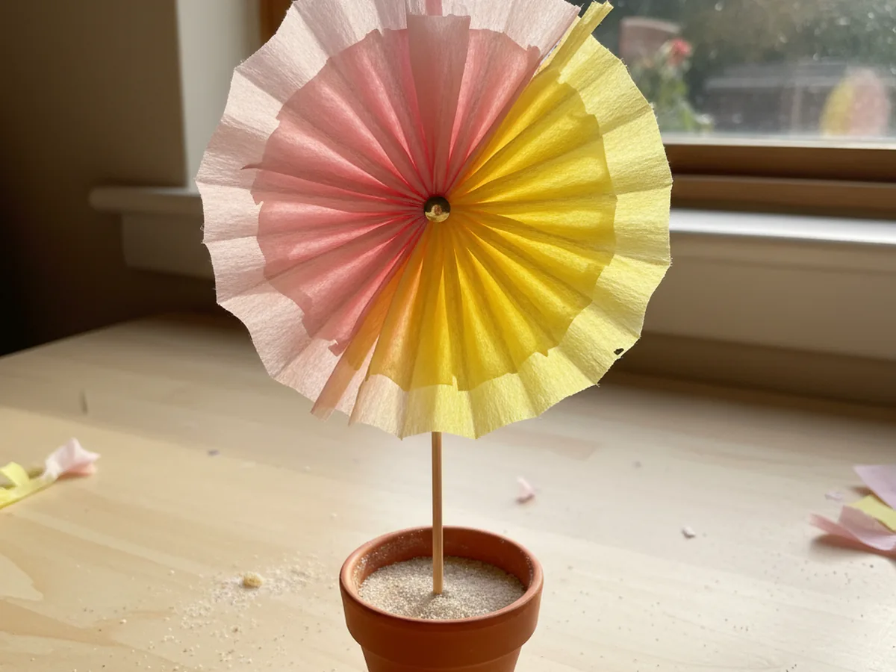
18. Tissue Paper Turtle
Cut a large oval from green cardstock for the shell and let your child cover it in small torn tissue paper squares in different shades of green. Add four small oval legs, a round head, and a tiny tail from cardstock. Glue a googly eye on each side of the head. These cute tissue paper crafts make a sweet nature-themed display on any shelf or windowsill.
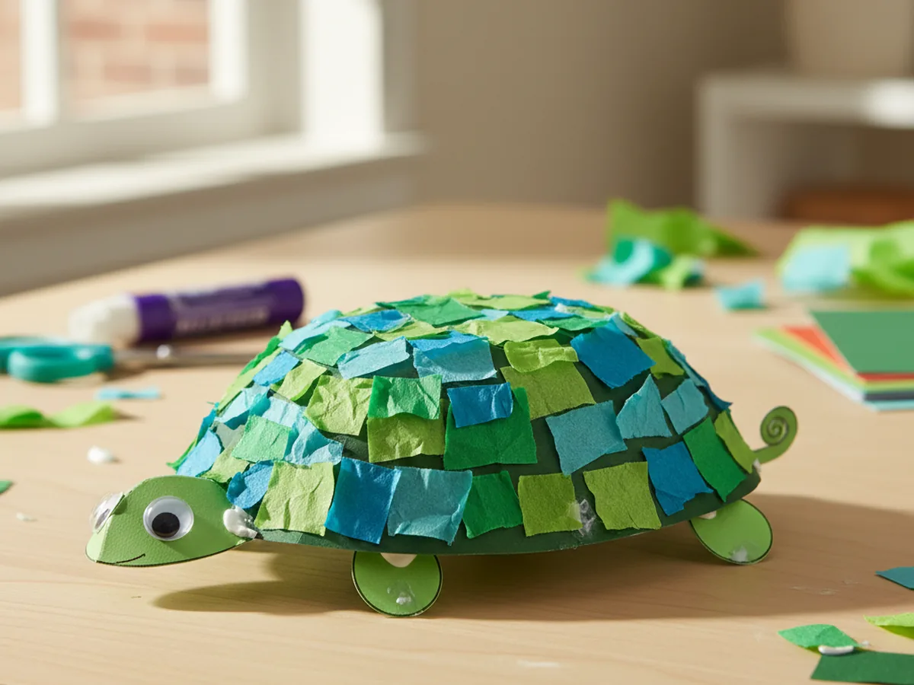
19. Tissue Paper Crown
Cut a zigzag crown shape from a strip of cardstock sized to fit your child's head. Let them decorate it with scrunched tissue paper jewels in bright colors, pressing each one on with a dab of glue. Staple the ends together once it fits. The result is a wearable masterpiece your little one will be so proud to wear around the house all afternoon. 👑
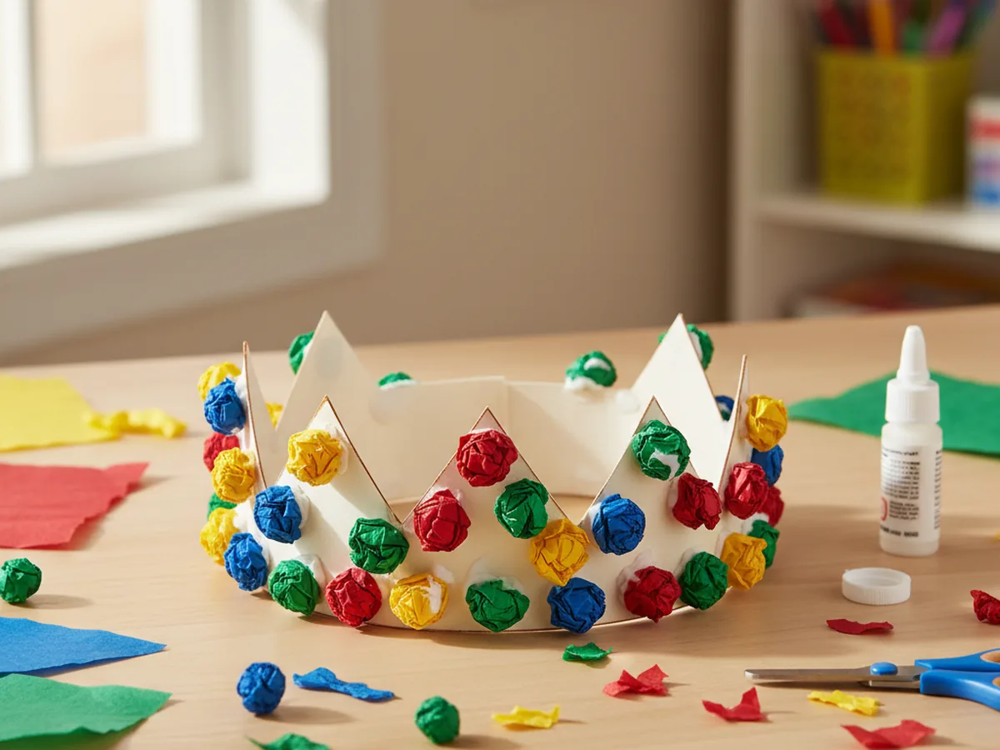
20. Tissue Paper Bookmark
Cut a rectangle of cardstock to bookmark size and let your child tear tiny bits of colorful tissue paper to glue all over it in a patchwork pattern. Seal with a layer of Mod Podge once dry. Punch a hole at the top and thread a short ribbon loop through. This is a wonderful tissue paper craft for kids that results in something genuinely useful and makes a lovely handmade gift for a grandparent or teacher.
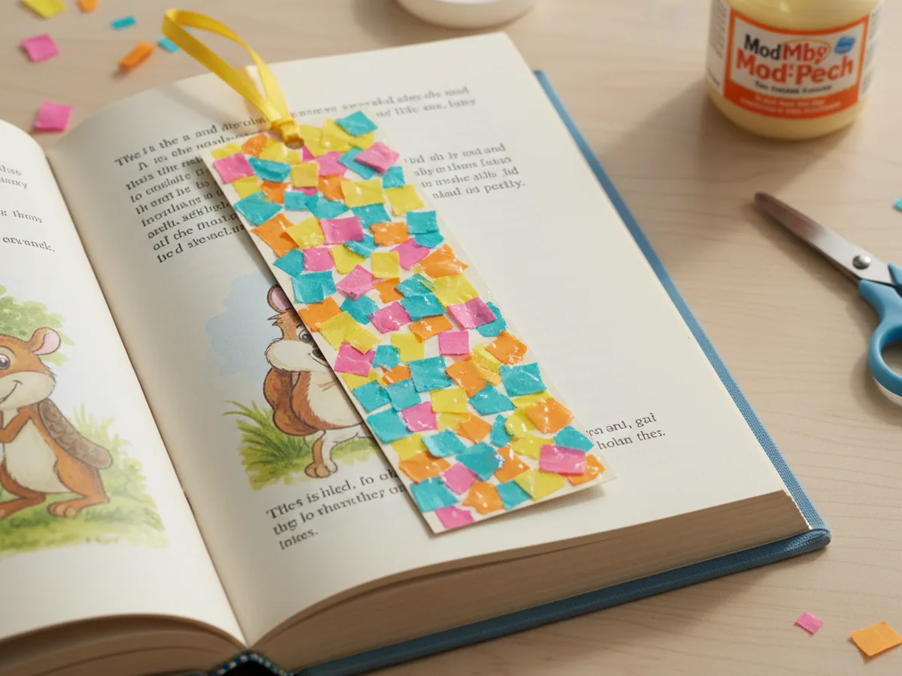
Final Thoughts
There is something truly special about the way tissue paper catches the light and transforms into something beautiful in a child's hands. These 20 tissue paper crafts are proof that you don't need expensive materials or complicated techniques to make something your family will cherish. Grab a pack of tissue paper, pull up a chair next to your little one, and enjoy the creative moment together. Whatever you make, it will be wonderful. ✨
More Crafts You'll Love
If your child is hooked on tissue paper, these two articles are perfect for your next crafting session.
- Easy Tissue Paper Flower Craft for Kids (Step-by-Step)
- Paper Arts and Crafts: Fun Ideas for Kids of All Ages
Happy crafting, friend. Pick one idea, invite your little ones to the table, and enjoy every colorful, messy, wonderful moment of it.